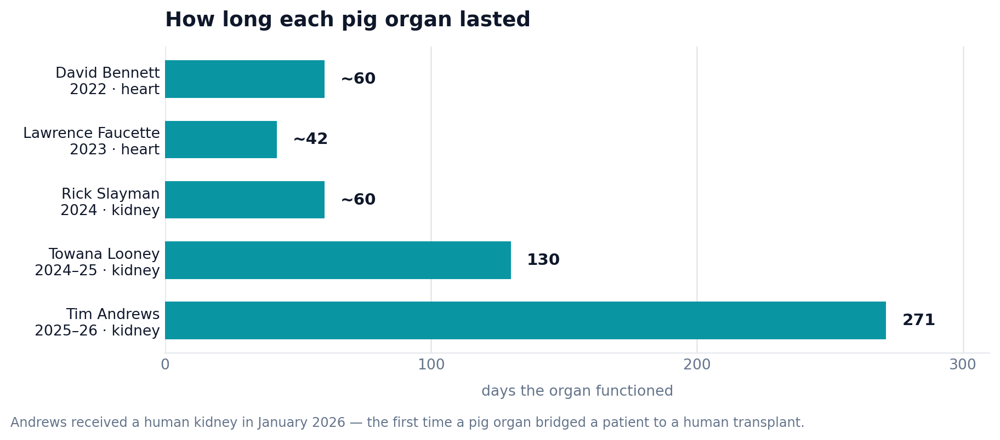

Lecture 12 — Animal Ethics
Part B: Industrial Animals, Xenotransplantation, and the Frontier
1 Rank These Four
1.1 A Case to Sit With
Here are four ways humans use animals. Put them in order, from most defensible to least:
- Bacon from a factory-farmed pig.
- A rabbit used to test a new mascara for eye irritation.
- A gene-edited pig whose heart is transplanted into a dying patient.
- A lab mouse engineered to be smarter, to make a better research subject.
Then answer:
- What did you put last, and what rule were you using?
- Did “high-tech” or “unnatural” push anything down your list? Should it?
1.2 After You’ve Discussed
Note
Most people rank the pig-heart transplant as more troubling than the bacon. Hold that intuition up to the light.
By the end of today, we’ll have a tool that ranks animal uses by three things — scale, necessity, and benefit — and on that tool, the everyday cheeseburger comes out worse than the high-tech transplant. Whether you accept that result, or reject the tool, is the work of this lecture.
1.3 Where We Left Off
In Part A we asked which beings have moral status and met five answers — Kant, Singer, Regan, Cohen, Korsgaard. We saw that the 3 Rs and the IACUC try to shrink and police the harm of research.
Today we leave the lab. The same views now have to handle the two largest and most advanced uses of animals: the food system that kills tens of billions, and the gene-edited pigs now keeping humans alive.
1.4 Today
By the end of Part B, you will be able to:
- Explain how industrial animal agriculture harms animals and humans — including antibiotic resistance and zoonotic risk.
- State the translation-gap critique of animal research and what the FDA and EU are doing about it.
- Describe how a pig is gene-edited for transplant and the ethical issues unique to xenotransplantation.
- Use the scale–necessity–benefit ledger to explain why a critic of factory farming can still accept pig-heart transplants — and how Regan resists that ranking.
- Connect animal ethics to moral status, enhancement, and end-of-life arguments from earlier in the course.
2 The Biggest Use: The Food System
2.1 The Scale Is the Argument
Whatever you think of eating meat, start with the number.
- Humans raise and kill roughly 80 billion land animals a year — about ten per person on Earth — the overwhelming majority on industrial farms.
- Most live in CAFOs (concentrated animal feeding operations): thousands of animals indoors at high density, bred for fast growth, with little room to move.
- Recall Singer from Part A: this inflicts vast suffering for an interest — taste, cost, convenience — that is, for most of us, minor and replaceable. On his view it is the clearest wrong in the whole field.
The scale matters morally: a practice repeated 80 billion times needs a justification 80 billion times as strong.
2.2 What That Number Looks Like
Socially Responsible Agricultural Project, via Wikimedia Commons. CC BY 4.0.
Each of those barns holds thousands of animals that will never go outside. This is what 80 billion a year requires.
2.3 It Harms Humans Too: Antibiotics
The welfare case is not the only case. Factory farming is also a public-health problem — which means even a strictly human-centered ethics has to reckon with it.
- The majority of antibiotics sold in the U.S. go to livestock, not people — often to healthy animals, to speed growth and prevent disease in crowded barns.
- Constant low-dose exposure breeds antibiotic resistance: bacteria that survive the drugs, then spread to humans through food, water, and workers.
- A major 2016 review projected that drug-resistant infections could cause 10 million deaths a year by 2050 if unchecked — outpacing cancer (O’Neill 2016).
The pig in the barn and the patient whose antibiotics no longer work are linked by the same practice.
2.4 It Harms Humans Too: Pandemics
The second human cost is the one we just lived through.
- Crowding genetically similar animals together is ideal for breeding new viruses. Avian and swine influenza strains have jumped from farms to people.
- Most experts count industrial animal agriculture and the wildlife trade among the leading pandemic risks of the century.
The convergence. Kant and Cohen grant animals no rights — yet their human-centered view still condemns a system that breeds resistant bacteria and pandemic flu.
Welfare reasons and self-interested human reasons point the same way here. That is rare, and worth noticing.
2.5 Thought Question
A hospital you work at sources its cafeteria meat from conventional industrial farms. A nurses’ group proposes switching to higher-welfare, antibiotic-free suppliers — at higher cost, paid from the same budget that funds patient programs.
- Is this an animal-welfare decision, a public-health decision, or both?
- As a nurse, can you justify the extra cost to a patient whose program might be trimmed to pay for it?
- Would Cohen — who grants animals no rights — have any reason to support the switch?
2.6 After You’ve Discussed
Note
A distinction the food case forces: direct vs. indirect harm.
The factory farm harms the pig directly — that is the welfare wrong. It also harms humans indirectly, through resistant bacteria and new viruses — a second, separate wrong with different victims.
Why this matters: the two harms come apart. A reform could ease the public-health harm (ban growth-promoter antibiotics) while leaving the welfare harm untouched — and vice versa. Knowing which harm a policy fixes keeps you from claiming credit for both.
3 Does the Research Even Work?
3.1 The Translation Gap
Part A defended research by its benefits. But a benefit you don’t get can’t justify a harm — and animal models often don’t deliver.
- Around 9 of every 10 drugs that pass animal safety and efficacy tests still fail in human trials — for lack of effect, or for toxicity the animals never showed.
- Species differ in ways that matter: a compound safe in mice can poison people, and a disease “cured” in a mouse routinely does nothing in patients.
- This is the translation gap: the distance between “it worked in the animal” and “it works in the human.”
3.2 Why the Gap Is an Ethical Argument
The translation gap turns a scientific fact into a moral one.
- The Part A defense was a cost-benefit trade: animal suffering is the price of human benefit. But if the data transfer poorly, the benefit shrinks — and the trade gets worse.
- This doesn’t show research is worthless; it shows the burden of proof is higher than the old “animals first, always” rule assumed.
- Critics push further: in some fields, human-based methods may predict human outcomes better than the animal model they’d replace — making the animal use not just costly but inferior.
3.3 What the Regulators Are Doing
For the first time, law is moving away from mandatory animal testing.
- The U.S. FDA Modernization Act 2.0 (2022) ended the blanket requirement that new drugs be animal-tested, allowing validated non-animal methods — organ-on-a-chip, cell models, computer simulation (United States Congress 2022).
- The European Union has committed to a roadmap to phase out animal testing for chemical safety, setting milestones toward replacement (European Commission 2025).
- Direction of travel: from “animals unless impossible” toward “non-animal where validated.”
3.4 The Honest Reply
Balance matters: the phase-out is a goal, not a finished capability.
- A chip with human cells can model a liver’s response — but not a whole immune system, a developing brain, or a years-long disease.
- For now, some questions genuinely require a living, whole organism. The replacements are improving fast but are not yet complete.
So the debate is no longer “research: yes or no?” It is how fast we can replace it, and who bears the risk of moving before the alternatives are proven.
Singer and Regan both welcome replacement — for different reasons. Less suffering; fewer rights violated.
4 The High-Tech, Low-Number Use
4.1 Why Xenotransplantation
The pressure behind it is a body count of a different kind.
- More than 108,000 Americans were on the transplant waiting list as of late 2025 — about 94,000 of them waiting for a kidney; roughly 17 die each day before an organ arrives.
- Xenotransplantation — transplanting organs from another species — promises an unlimited supply, grown to order.
- The species of choice is the pig: organs the right size, fast breeding, decades of surgical familiarity. The obstacle was always rejection — the human body destroys pig tissue within minutes.
4.2 How You Build a Transplant Pig
The breakthrough was genetic, not surgical. CRISPR lets researchers edit a pig so its organs survive in a human body.
A transplant pig may carry a dozen or more edits — some removing pig features the body attacks, some adding human ones it accepts.
4.3 The Cases So Far
The era of human xenotransplantation began in 2022 and is moving fast — fast enough that this chart needs checking every term.
findfont: Font family 'Inter' not found.
findfont: Font family 'Inter' not found.
findfont: Font family 'Inter' not found.
findfont: Font family 'Inter' not found.
findfont: Font family 'Inter' not found.
findfont: Font family 'Inter' not found.
findfont: Font family 'Inter' not found.
findfont: Font family 'Inter' not found.
findfont: Font family 'Inter' not found.
findfont: Font family 'Inter' not found.
findfont: Font family 'Inter' not found.
findfont: Font family 'Inter' not found.
findfont: Font family 'Inter' not found.
findfont: Font family 'Inter' not found.
findfont: Font family 'Inter' not found.
findfont: Font family 'Inter' not found.
findfont: Font family 'Inter' not found.
findfont: Font family 'Inter' not found.
findfont: Font family 'Inter' not found.
findfont: Font family 'Inter' not found.
findfont: Font family 'Inter' not found.
findfont: Font family 'Inter' not found.
findfont: Font family 'Inter' not found.
findfont: Font family 'Inter' not found.
findfont: Font family 'Inter' not found.
findfont: Font family 'Inter' not found.
findfont: Font family 'Inter' not found.
findfont: Font family 'Inter' not found.
findfont: Font family 'Inter' not found.
findfont: Font family 'Inter' not found.
findfont: Font family 'Inter' not found.
findfont: Font family 'Inter' not found.
findfont: Font family 'Inter' not found.
findfont: Font family 'Inter' not found.
findfont: Font family 'Inter' not found.
findfont: Font family 'Inter' not found.
findfont: Font family 'Inter' not found.
findfont: Font family 'Inter' not found.
findfont: Font family 'Inter' not found.
findfont: Font family 'Inter' not found.
findfont: Font family 'Inter' not found.
findfont: Font family 'Inter' not found.
findfont: Font family 'Inter' not found.
findfont: Font family 'Inter' not found.
findfont: Font family 'Inter' not found.
findfont: Font family 'Inter' not found.
findfont: Font family 'Inter' not found.
findfont: Font family 'Inter' not found.
findfont: Font family 'Inter' not found.
findfont: Font family 'Inter' not found.
findfont: Font family 'Inter' not found.
findfont: Font family 'Inter' not found.
findfont: Font family 'Inter' not found.
findfont: Font family 'Inter' not found.
findfont: Font family 'Inter' not found.
findfont: Font family 'Inter' not found.
findfont: Font family 'Inter' not found.
findfont: Font family 'Inter' not found.
findfont: Font family 'Inter' not found.
findfont: Font family 'Inter' not found.
findfont: Font family 'Inter' not found.
findfont: Font family 'Inter' not found.
findfont: Font family 'Inter' not found.
findfont: Font family 'Inter' not found.
findfont: Font family 'Inter' not found.
findfont: Font family 'Inter' not found.
findfont: Font family 'Inter' not found.
findfont: Font family 'Inter' not found.
findfont: Font family 'Inter' not found.
findfont: Font family 'Inter' not found.
findfont: Font family 'Inter' not found.
findfont: Font family 'Inter' not found.
findfont: Font family 'Inter' not found.
findfont: Font family 'Inter' not found.
findfont: Font family 'Inter' not found.
findfont: Font family 'Inter' not found.
findfont: Font family 'Inter' not found.
findfont: Font family 'Inter' not found.
findfont: Font family 'Inter' not found.
findfont: Font family 'Inter' not found.
findfont: Font family 'Inter' not found.
findfont: Font family 'Inter' not found.
findfont: Font family 'Inter' not found.
findfont: Font family 'Inter' not found.
findfont: Font family 'Inter' not found.
findfont: Font family 'Inter' not found.
findfont: Font family 'Inter' not found.
findfont: Font family 'Inter' not found.
findfont: Font family 'Inter' not found.
findfont: Font family 'Inter' not found.
findfont: Font family 'Inter' not found.
findfont: Font family 'Inter' not found.
findfont: Font family 'Inter' not found.
findfont: Font family 'Inter' not found.
findfont: Font family 'Inter' not found.
Each patient was out of options. Each result taught the field something — and each death raised the question of whether the attempt was justified.
| Patient | Year | Organ | Outcome |
|---|---|---|---|
| David Bennett | 2022 | pig heart | lived ~2 months; first in a living human (Griffith et al. 2022) |
| Lawrence Faucette | 2023 | pig heart | lived ~6 weeks |
| Rick Slayman | 2024 | pig kidney | first in a living patient; lived ~2 months |
| Towana Looney | 2024–25 | pig kidney | organ removed after 130 days |
| Tim Andrews | 2025–26 | pig kidney | 271 days — longest to date; then received a human kidney |
Two things changed the question in 2025–26.
1. It stopped being a series of one-offs and became a clinical trial. In 2025 the FDA cleared the first true xenotransplant trials. Two companies, two strategies: United Therapeutics (the EXPAND study, using a 10-gene-edited pig kidney; first patient transplanted at NYU Langone in November 2025) and eGenesis (a 69-gene-edited pig kidney). Until now, every patient was an individual rescue attempt under compassionate-use rules. A trial means enrollment criteria, controls, and — crucially — patients who are not out of options in quite the same way. Recall the Chapter 3 vocabulary: this is the moment xenotransplantation acquires a clinical equipoise problem it did not previously have.
2. Tim Andrews crossed a bridge. Andrews, a 67-year-old retired engineer from New Hampshire, received a 69-gene-edited pig kidney in January 2025. He lived with it 271 days — surpassing Looney’s 130 — before declining function forced its removal in October 2025 and he returned to dialysis (CNN 2025). Then, in January 2026, he received a human kidney (CNN 2026).
That last step reframes the entire enterprise. If a pig organ can keep someone alive and off dialysis long enough to reach a human transplant, then xenotransplantation may not need to be a permanent replacement to be worth doing. It could be a bridge — the way a ventricular assist device bridges a patient to a heart. A bridge is a far easier ethical case to make than a cure: it needs to work for months, not decades.
Write or discuss: Does reframing xeno organs as a bridge rather than a destination change whether Bennett’s 2022 surgery was justified? Does it change what you must tell the next patient in the consent conversation?
4.4 What Makes Xeno Ethically Distinct
Three problems set xenotransplantation apart from an ordinary transplant.
- Animal welfare: the source pigs live their whole lives in sterile isolation, engineered and monitored as living organ factories.
- Risk to the public: a pig virus could cross into the patient and then spread to others — a xenozoonosis. The patient consents; the public can’t, yet shares the risk.
- Consent under desperation: a dying patient offered a first-of-its-kind organ is not a free chooser in the ordinary sense. Is that consent, or a cornered hope?
4.5 Make It Contemporary
David Bennett received his pig heart under an FDA “compassionate use” exception — he was too sick for the transplant waitlist. He lived two months. His son said the family hoped the attempt would “help future patients.”
- Was it ethical to offer a brand-new, likely-fatal procedure to a man with no other options — or did desperation make real consent impossible?
- Xenozoonosis risk falls on the whole community. Who should get a say in approving these surgeries — only patient and doctor, or the public too?
- If the first heart transplant patients (1967) also died within weeks, does that make these attempts pioneering, or reckless?
5 The Ranking That Surprises People
5.1 The Ledger
Here is the tool promised at the start. Rank an animal use by three questions.
- Scale — how many animals? (one pig, or tens of billions?)
- Necessity — is there an easy alternative? (a salad, or nothing?)
- Benefit — how large is the human good? (a flavor, or a life?)
A use scores badly when it is high-scale, unnecessary, and low-benefit — and well when it is low-scale, necessary, and high-benefit.
5.2 Filling It In
| Use | Scale | Necessity | Benefit | Verdict |
|---|---|---|---|---|
| Factory-farmed bacon | tens of billions | easily avoided | taste / cost | worst |
| Cosmetic rabbit test | millions | avoidable (alternatives exist) | vanity product | bad |
| Pig-heart transplant | one pig | no alternative | a human life | best |
| Smarter lab mouse | few | — | research gain, but… | (see frontier) |
Read the top and bottom rows together: the everyday cheeseburger scores worse than the headline-grabbing transplant.
5.3 Why Singer Accepts the Pig Heart
This is the result that unsettles people — and it is perfectly consistent.
- Singer opposes factory farming because it is vast suffering for a trivial, replaceable interest. The same logic, applied to xenotransplantation, points the other way.
- One pig, humanely raised, to save a human life with no alternative, is exactly the trade a utilitarian can endorse.
- So an arch-critic of how we treat animals can support pig-heart transplants. The thing that feels “worse” because it is high-tech is, by the numbers, far better.
The lesson: “creepy” and “wrong” are different properties. Novelty triggers disgust; ethics tracks suffering, necessity, and benefit.
5.4 Why Regan Won’t Rank Them
The rights view from Part A refuses the whole exercise — and that refusal is the strongest objection to the ledger.
The Rights Objection to the Ledger
After Tom Regan, The Case for Animal Rights
- A subject-of-a-life has a right not to be used merely as a means to others’ ends.
- The transplant pig is killed precisely as a means — to harvest its heart.
- Rights are not outweighed by good consequences, however large, or by small numbers.
- So the pig-heart transplant violates the pig’s rights — and “only one pig” is no defense.
For Regan, the ledger commits the original sin of utilitarianism: it prices a life that should be off the market. Where you land depends on the theory you brought from Part A.
6 The Frontier: Smarter Animals
6.1 Uplifting
The fourth row of the ledger needs its own treatment, because it changes the rules.
- Uplifting means deliberately raising an animal’s cognitive capacities — by gene editing, drugs, or adding human cells — for example, to build a more capable research subject or a better working animal.
- Recall the enhancement debate from genomics: we asked whether to enhance humans. Here the target is the animal.
- It sounds like science fiction, but its first pieces already exist in the lab.
6.2 The Paradox
Uplifting turns the moral-status question back on us.
- In Part A, capacities earned moral status — sentience, being a subject-of-a-life, having a good of one’s own.
- So if we raise an animal’s capacities, we raise its moral status — and our duties to it grow.
- The better we make a research animal, the less we may be permitted to use it. Success defeats its own purpose.
We would be manufacturing the very thing that obligates us — creating a creature, then owing it more because of what we made it.
Korsgaard’s “fellow creatures” compounds the worry: uplifting could create fellows we never intended to have.
6.3 It’s Already Real
The pieces are not hypothetical.
- In 2022 Stanford researchers transplanted human brain organoids — clusters of human neurons — into rat brains, where they grew, wired in, and influenced the rats’ behavior (Revah et al. 2022).
- Such chimeras (animals carrying human cells) are made to study human disease — but they create beings of ambiguous status: how much human neural tissue is too much?
- Regulators now draw uneasy lines around how far this may go, especially for human cells in animal brains and reproductive systems.
6.4 Thought Question
A lab proposes engineering mice with substantially human-like memory and problem-solving, to make Alzheimer’s research more accurate. The mice would be smarter — and, by Part A’s own criteria, would have higher moral status.
- Does making the mouse smarter make it more wrong to experiment on — even though the point was better research?
- Is there a level of enhancement past which the “animal” should get human-like protections? Where, and decided by whom?
- Could it ever be kinder to refuse to uplift — to not create a being whose new capacities only deepen its suffering in a cage?
6.5 After You’ve Discussed
Note
A new distinction the frontier forces: moral status as discovered vs. created.
All of Part A treated status as something we discover — we investigate an animal and find out how much it matters. Uplifting and chimeras make status something we can create: we decide, in the lab, how much a being will matter, and thereby how much we’ll owe it.
That is genuinely new in ethics. We are used to asking “what do we owe this creature?” We are not used to choosing, in advance, how much we’ll be obligated — and then building the creature to match.
7 Connecting Threads
7.1 The Course, Applied to Animals
The moral-status question runs under half this course. Each chapter offered a criterion — and each one can be aimed at animals.
We’ll walk three of these, because each changes its verdict when the patient is a pig.
7.2 Thread 1 — The Argument from Abortion
Don Marquis argued abortion is wrong because it deprives the fetus of a future like ours — a future of valuable experiences (Marquis 1989). The fetus isn’t conscious yet, but it has that future to lose.
Now apply it. A healthy pig also has a future of experiences it values — and the transplant ends it.
- If a valuable future makes killing a fetus wrong, why doesn’t a pig’s future make killing the pig wrong?
- Can you keep Marquis’s argument against abortion and eat bacon — without special pleading?
- Does the pig’s future differ from a human’s in a way that matters, or only in a way that’s convenient?
7.3 Threads 2 and 3 — Genetics and End of Life
Two more callbacks, stated briefly so you can carry them into discussion.
From genetics. We worried about creating a savior sibling — a child conceived to donate to another. A transplant pig is engineered, born, and killed to be used. Is “made to be used” worse for a person than for a pig — and is creating a life for parts different from taking one?
From end of life. We let humans accept risk or death for others (research subjects, living donors). The pig’s death is killing for benefit, without consent. Is that worse than the risks we let humans choose — or does the pig’s inability to consent change the kind of act it is?
8 Where This Leaves Us
8.1 Wrap-Up
We ranked four uses of animals and built a tool — scale, necessity, benefit — that reorders our intuitions: the industrial cheeseburger comes out worse than the gene-edited pig heart, and a critic of factory farming like Singer can consistently accept xenotransplantation. Regan’s rights view refuses the ranking entirely, which is why the verdict still depends on the theory you hold. Along the way the food system showed how animal harm and human harm converge — antibiotic resistance, pandemics — and the frontier of uplifting showed we can now create the moral status we then must honor. The threads from abortion, genetics, and end-of-life all reach the same pig, and none of them lets us off easily.
8.2 Paired Case
The whole lecture comes down to one operating room and one desperate patient.
Paired case: David Bennett and the First Pig-Heart Transplant
8.3 Review Questions
Recall
Name the three factors in the scale–necessity–benefit ledger, and use them to explain why factory-farmed bacon ranks worse than a pig-heart transplant.
Apply
A company wants to gene-edit chickens to grow faster and resist a barn virus, cutting both cost and antibiotic use. Run it through the ledger and through the direct/indirect-harm distinction. Where does it help, and whom?
Debate
If we could uplift research animals to get better data, should we — knowing that doing so raises their moral status and our duties to them? Defend a yes or a no.
8.4 Key Terms
- CAFO — concentrated animal feeding operation; the high-density industrial farm model.
- Antibiotic resistance — bacteria evolving to survive drugs; driven partly by routine livestock use.
- Translation gap — the frequent failure of animal results to predict human outcomes.
- Xenotransplantation — transplanting organs or tissue from another species into humans.
- Xenozoonosis — an infection crossing from the source animal to the human recipient and potentially the public.
- Uplifting — deliberately enhancing an animal’s cognitive capacities.
- Chimera — an organism containing cells from another species, e.g., human neurons in an animal brain.
- Future like ours (Marquis) — the view that killing is wrong because it deprives a being of a valuable future.
- Scale–necessity–benefit ledger — the framework for ranking animal uses by number harmed, availability of alternatives, and size of the good.
8.5 Further Reading
- Singer, Peter. Animal Liberation Now. Harper Perennial, 2023 — the updated case against industrial farming.
- Griffith, Bartley P., et al. “Genetically Modified Porcine-to-Human Cardiac Xenotransplantation.” New England Journal of Medicine, 2022 — the Bennett case, by the surgical team.
- Korsgaard, Christine. Fellow Creatures. Oxford University Press, 2018 — duties to animals, including the created ones.
8.6 References
CNN. 2025. Pig Kidney Removed from New Hampshire Man Tim Andrews 271 Days After Transplant. CNN Health, October 27, 2025. https://www.cnn.com/2025/10/27/health/pig-kidney-transplant-tim-andrews.
CNN. 2026. Man Who Received Experimental Pig Kidney Transplant Now Has a Human Organ. CNN Health, January 16, 2026. https://edition.cnn.com/2026/01/16/health/pig-kidney-human-organ-transplant.
European Commission. 2025. Roadmap Towards Phasing Out Animal Testing for Chemical Safety Assessments. European Commission, Directorate-General for Environment. https://environment.ec.europa.eu/.
Griffith, Bartley P., Corbin E. Goerlich, Avneesh K. Singh, et al. 2022. “Genetically Modified Porcine-to-Human Cardiac Xenotransplantation.” New England Journal of Medicine 387 (1): 35–44. https://doi.org/10.1056/NEJMoa2201422.
Marquis, Don. 1989. “Why Abortion Is Immoral.” The Journal of Philosophy 86 (4): 183–202. https://doi.org/10.2307/2026961.
O’Neill, Jim. 2016. Tackling Drug-Resistant Infections Globally: Final Report and Recommendations. Review on Antimicrobial Resistance, Wellcome Trust and HM Government. https://amr-review.org/.
Revah, Omer, Felicity Gore, Kevin W. Kelley, et al. 2022. “Maturation and Circuit Integration of Transplanted Human Cortical Organoids.” Nature 610: 319–26. https://doi.org/10.1038/s41586-022-05277-w.
United States Congress. 2022. FDA Modernization Act 2.0. 117th Congress.